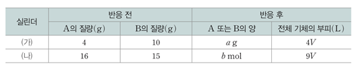

문제:
다음은 t℃, 1atm에서 A(g)와 B(g)가 반응하여 C(g)를 생성하는 반응의 화학 반응식이다.
A(g) + 2B(g) → 2C(g)
표는 실린더 (가)와 (나)에 A(g)와 B(g)의 질량을 달리하여 넣고 각각 반응을 완결시켰을 때, 반응 전과 후 기체에 대한 자료이다. A의 분자량은 32이다.
이에 대한 설명으로 옳은 것만을 있는 대로 고르시오.
- ㄱ. b/a=1/10이다.
- ㄴ. 분자량비는 B:C = 15:23이다.
- ㄷ. '생성된 C(g)의 양(mol) / 반응 후 전체 기체의 양(mol)' 의 비는 (가):(나) = 9:8이다.
1. ㄱ
2. ㄴ
3. ㄱ, ㄷ
4. ㄴ, ㄷ
5. ㄱ, ㄴ ,ㄷ